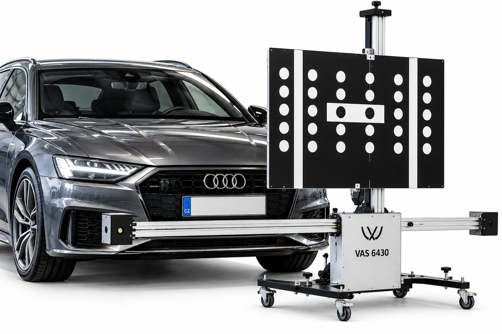

J&S servis in Statenice has been specializing in servicing Volkswagen, Audi, Škoda, SEAT and CUPRA vehicles since 1994.
We carry out professional diagnostics, adjustment, basic settings and calibration of driver assistance systems (ADAS) using the ODIS diagnostic system and specialised calibration equipment according to the service procedures of the vehicle manufacturer.
- Specializing in advanced VW Group assistants
- ODIS diagnostics and professional calibration
- Manufacturer procedures and more than 30 years of experience
Price
from 3 200 Kč including VAT for standard adjustment or calibration of one assistance system.

How do the individual systems work?
Assistance systems help the driver when driving, parking and monitoring the surroundings of the vehicle. By unpacking the individual items, you will find out what they are used for, how they manifest themselves in normal operation and when their professional inspection is appropriate. The overview also includes related sensors and imaging technologies.
Specific features, activation conditions, and setting options vary by make, model, year, and trim level. The following overview explains their general principle; the operator's manual is decisive for the control and operational limitations of a specific vehicle. Trade names vary between brands and similar functions may be labeled differently. Assistance systems do not replace the attention or responsibility of the driver.
ACC – adaptive cruise control
What is it for?
ACC helps to maintain the set speed and selected distance from the recognized vehicle driving in front of you.
How it behaves while driving
If the vehicle in front of you slows down, ACC can reduce the speed. Once the space is free, it can accelerate again up to the set value. Selected designs also enable braking to a stop and support for subsequent start-up. These functions depend on the specific system and transmission.
What is important to know
ACC does not guarantee that an accident will be avoided. The driver must remain ready to brake and respond to changing traffic conditions. An obstructed sensor or adverse conditions may limit availability.
When do we recommend an inspection?
In case of repeated unavailability, error message or unusual reactions. The need for adjustment or calibration after repair is determined according to the specific vehicle and the manufacturer's regulations.
Front Assist – monitoring the space in front of the vehicle and emergency braking
What is it for?
Front Assist helps recognize the risk of a collision in front of the vehicle and alerts the driver to the need to react. Depending on the design, it can support braking or initiate automatic emergency braking.
How it behaves while driving
In the event of an evaluated danger, an optical and acoustic warning may appear, with some systems also a warning brake impulse. If the driver does not react sufficiently, a braking intervention may follow. Recognition of pedestrians, cyclists and other situations depends on system generation and equipment.
What is important to know
Front Assist can work even when the ACC speed control is not activated. However, it cannot detect every danger and does not guarantee collision avoidance. The alert must be responded to; automatic intervention is not a substitute for timely braking by the driver.
When do we recommend an inspection?
In the event of an error message, repeated unjustified warnings or unusual braking interventions.
Lane Assist – lane keeping assistant
What is it for?
Lane Assist uses the front camera to evaluate the detected lane boundaries and helps to limit unintentional lane departure.
How it behaves while driving
If the vehicle approaches a detected lane boundary, the system may apply corrective steering. Some versions also provide other warnings. Selected systems or modes offer continuous lane guidance. A lane change with the indicator on is generally treated as intentional; interaction with adjacent-lane monitoring may nevertheless warn of danger.
What is important to know
Functionality depends on lane boundary recognition and operating conditions. The name Lane Assist alone does not mean permanent guidance in the middle of the lane or autonomous driving. The driver must drive the vehicle continuously.
When do we recommend an inspection?
In case of repeated unavailability or unusual management corrections. After replacing the windshield or tampering with the camera, we verify the prescribed follow-up actions.
Side Assist – lane change assistant
What is it for?
Side Assist monitors the space next to and behind the vehicle. It helps alert you to detected vehicles in your blind spot or to vehicles approaching quickly from behind.
How it behaves while driving
When a detected vehicle is relevant to a lane change, the system alerts the driver with a light on the corresponding side, usually in the exterior mirror. If the indicator is activated and the system assesses the lane change as hazardous, the warning may flash prominently. On selected vehicles, interaction with other assistance systems may also include corrective steering.
What is important to know
The warning does not replace checking the mirrors and the space next to the vehicle. Also, Side Assist cannot be automatically equated with Park Assist or Exit Alert.
When do we recommend an inspection?
In case of error messages, repeated unusual signaling or after damage to the sensor area.
Rear View – rear parking camera
What is it for?
The rear camera transmits an image of the space behind the vehicle to the display and facilitates orientation when reversing and parking.
How it behaves when maneuvering
The image is usually activated after engaging the reverse gear. Depending on the equipment, it may contain auxiliary lines or other display modes. In some versions, the guide lines change according to the steering wheel.
What is important to know
The camera does not replace direct inspection of the surroundings. The camera image alone does not mean that the vehicle is automatically steering or braking. The image is an orientation aid, not an exact distance measure. Viewing may be limited by dirt or poor visibility.
When do we recommend an inspection?
When the image drops out, rotates abnormally or the guide lines do not match. We assess the need for calibration according to the type of camera system.
Area View – camera overview of the vehicle's surroundings
What is it for?
Area View uses several cameras to display the immediate surroundings of the vehicle. The typical four-camera design also creates a composite top view.
How it behaves when maneuvering
Depending on the equipment, the driver can choose between individual views and better assess the position of the vehicle in relation to the curb, parking lines or surrounding obstacles.
What is important to know
The view from above is created by computationally combining images; this is not an actual overhead camera shot. The display does not replace direct inspection of the surroundings and does not in itself confirm the function of automatic parking or braking.
When do we recommend an inspection?
In case of failure of some view or unusual continuity of the image between the cameras. The defect cannot be determined by the image alone; we verify the need for calibration through diagnostics and according to the manufacturer's prescription.
Night Vision - night vision system
What is it for?
The system uses a thermal camera to display a thermal image of the area in front of the vehicle. In appropriately equipped vehicles, it helps to draw attention to recognized persons or larger animals.
How it behaves while driving
A thermal image is displayed on the instrument display. Recognized objects can be highlighted and a warning can follow when the danger is evaluated. Some designs also work with headlights or a head-up display.
What is important to know
A thermal camera does not display the surroundings in the same way as a regular camera and cannot recognize every dangerous situation. The conditions for recognition, warning and possible illumination vary by vehicle. Adverse weather and temperature conditions can limit recognition. Night Vision does not replace proper lighting or road monitoring.
When do we recommend an inspection?
In the event of an error message, image dropout or after damage or repair in the area of the thermal camera.
Laser scanner and other sensors – how the vehicle follows the surroundings
What is it for?
A laser scanner, also referred to as a lidar, measures the distance and spatial arrangement of detected objects using reflected light pulses. For appropriately equipped vehicles, it supplements information from radars and cameras.
How it manifests itself while driving
As a rule, the scanner does not have its own separate control. His data is used by subsequent assistance functions. When limiting the sensor, the vehicle can also announce the limited availability of one of these assistants.
What is important to know
A laser scanner is not part of every car and is not the same as a radar. Different types of sensors, including radars, cameras and ultrasonic sensors, have different tasks and can complement each other. Their presence in itself does not mean the possibility of autonomous driving.
When do we recommend an inspection?
When reporting a fault or after damage to the sensor area. We verify the specific follow-up to the assistance functions and the required service operations according to the vehicle's equipment.
Head-up Display (HUD) – information in the driver's field of vision
What is it for?
The head-up display displays selected driving information in the driver's field of vision. Depending on the equipment, it can show speed, navigation instructions, traffic signs or notifications from assistance systems.
How it behaves while driving
The driver can monitor important data with less distraction from the road. Selected versions with augmented reality can project navigation or assistance symbols in such a way that they visually follow the events in front of the vehicle.
What is important to know
The HUD is a display system. It does not detect obstacles or control the vehicle itself. The information shown and user settings depend on the version. Systems that project onto the windscreen also require the correct windscreen for that projection system; a double image is therefore not necessarily just an adjustment issue.
When do we recommend an inspection?
In the event of a dropout, duplication, deformation or incorrect position of the image. We distinguish normal user settings from professional service settings or calibration if the manufacturer prescribes them.
Inspection and calibration according to the specific vehicle
Depending on the model and equipment, we carry out diagnostic checks, prescribed settings or calibration of supported systems. We verify the specific range according to the vehicle and the manufacturer's current instructions. The error message itself may not mean the need for calibration or replacement of the sensor; the cause of the fault must first be determined.
When might calibration be necessary?
Calibration or basic adjustment may be prescribed especially after the replacement of the windshield, camera, radar or other sensor, after bodywork repairs, interventions in the chassis or adjustment of wheel alignment.
The need for calibration always depends on the specific system and the service procedure of the manufacturer.
Diagnostic and calibration procedure
Before starting, we check the fault memory, the state of the relevant control units and the required technical conditions. Depending on the type of system, we perform prescribed static or dynamic calibration procedures, basic settings and check the result via ODIS.
The range and availability of individual actions depends on the model, model year, equipment and technical condition of the vehicle.
Service price
The price of standard adjustment or calibration of one assistance system is from 3 200 Kč including VAT.
The price is valid for one system and the standard scope of the prescribed action. Calibration of other systems, extended diagnostics, necessary preparatory work and possible repairs are billed separately after prior agreement with the customer.
We work according to the manufacturer's service procedures and with regard to the design and technical capabilities of a specific vehicle.
To book in Statenice near Prague call the office +420 605 399 448 or the workshop +420 608 313 437
Mon–Fri 9:00–18:00